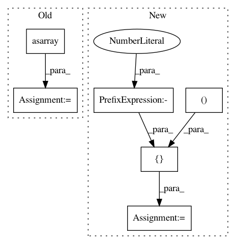

867b6641e9806ab441f78b787fd26e6f2d7230be,examples/plot_gbrt_minimize_2d.py,,,#,9
Before Change
plt.figure(figsize=(10, 10))
plt.set_cmap("viridis")
bounds = np.asarray([[-5, 10], [0, 15]])
x1_values = np.linspace(-5, 10, 100)
x2_values = np.linspace(0, 15, 100)
x_ax, y_ax = np.meshgrid(x1_values, x2_values)
After Change
plt.figure(figsize=(10, 10))
plt.set_cmap("viridis")
dimensions = [(-5.0, 10.0), (0.0, 15.0)]
x1_values = np.linspace(-5, 10, 100)
x2_values = np.linspace(0, 15, 100)
x_ax, y_ax = np.meshgrid(x1_values, x2_values)
In pattern: SUPERPATTERN
Frequency: 3
Non-data size: 6
Instances
Project Name: scikit-optimize/scikit-optimize
Commit Name: 867b6641e9806ab441f78b787fd26e6f2d7230be
Time: 2016-06-14
Author: g.louppe@gmail.com
File Name: examples/plot_gbrt_minimize_2d.py
Class Name:
Method Name:
Project Name: astorfi/TensorFlow-World
Commit Name: 874382bfb96b92dcfdd6326ba83c54ad1e9d42f2
Time: 2017-06-26
Author: amirsina.torfi@gmail.com
File Name: codes/2-basics_in_machine_learning/linear_regression/code/linear_regression.py
Class Name:
Method Name:
Project Name: scikit-optimize/scikit-optimize
Commit Name: 867b6641e9806ab441f78b787fd26e6f2d7230be
Time: 2016-06-14
Author: g.louppe@gmail.com
File Name: examples/plot_gp_minimize_2d.py
Class Name:
Method Name: